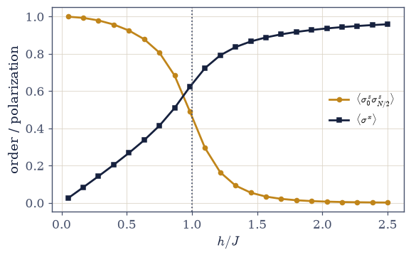
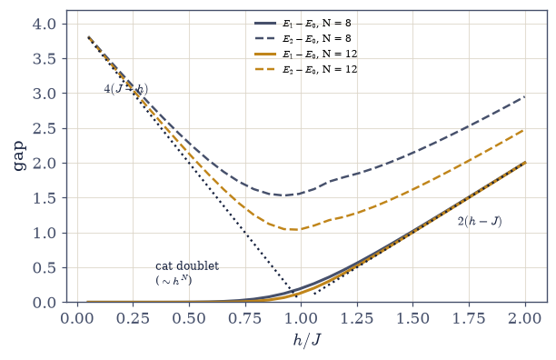
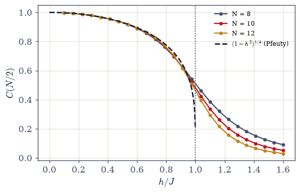
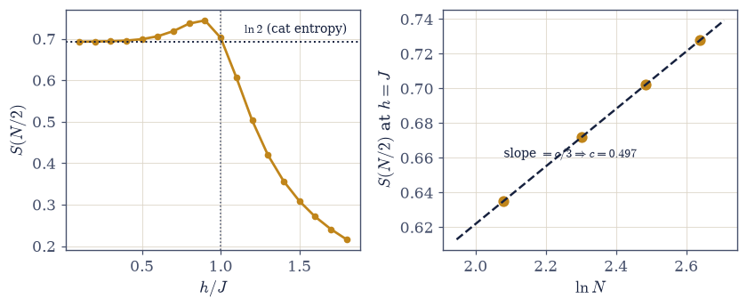
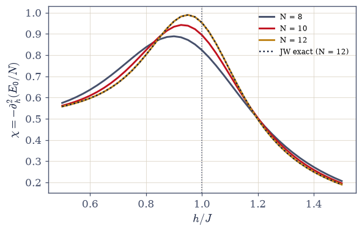
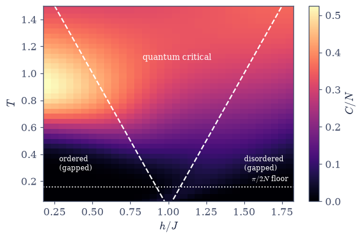

7.19 The Transverse-Field Ising Chain: A Phase Transition at Absolute Zero#
Notebook overview#
Every transition in this course so far needed heat: order lost to thermal agitation as \(T\) rose, the bargain between energy and entropy that Volume V made its engine. This notebook’s transition happens at absolute zero, where there is no heat at all: the agitation is quantum. The Hamiltonian \(H = -J\sum\sigma^z_i\sigma^z_{i+1} - h\sum\sigma^x_i\) contains two demands that do not commute: the coupling wants definite \(\sigma^z\) (aligned neighbours), the field wants definite \(\sigma^x\), and no state satisfies both. The ground state must broker a compromise, and at \(h = J\) the compromise changes character abruptly. The classical chain of §5.10 famously has no transition at any finite temperature in one dimension; its quantum counterpart has one at \(T = 0\), with \(g = h/J\) replacing temperature as the dial.
The rendezvous reveals whose machinery this really is. The Jordan–Wigner transformation (sketched honestly, not belabored) maps the chain to free fermions with the Bogoliubov spectrum \(\varepsilon(k) = 2\sqrt{J^2 + h^2 - 2Jh\cos k}\) (Pfeuty 1970), so the ground state is a filled Fermi sea of quasiparticles (Movement III hiding inside a magnet), and the ground energy is a one-line momentum sum over the antiperiodic set \(k = (2j{-}1)\pi/N\). Exact diagonalization agrees with that sum to \(10^{-14}\) at nine \((N, h)\) points: four thousand amplitudes against six terms. In fermion language the transition is transparent: the quasiparticle gap \(\varepsilon(0) = 2|h - J|\) closes linearly at \(h = J\), and a closing gap is the transition (\(z = 1\): energy scales as one over length). The gap then tells four stories through one parity rule (quasiparticles are made in pairs within a fermion-parity sector; a single quasiparticle changes sector): the ordered doublet splits exponentially (\(\sim h^N\): the finite-size shadow of symmetry breaking, and the states are cats); the ordered side’s physical gap is a two-quasiparticle threshold (a flipped domain has two walls); the disordered gap is a single quasiparticle at \(2(h-J)\); and the critical gap closes as \(\Delta \cdot N \to \pi/2\), with an honest correction performed in public, since the naive same-sector guess predicts a different coefficient and the computer overruled it.
Order turns out to be subtler than magnetization: any finite symmetric ground state has \(\langle\sigma^z\rangle = 0\) identically (measured: \(10^{-11}\), which is solver noise, not physics), and the order lives in correlations: \(C(N/2) = 0.93054\) against Pfeuty’s exact \((1-h^2)^{1/4} = 0.93060\). The exponent inside, \(1/8\), is the 2D classical Ising magnetization exponent: a quantum chain at \(T = 0\) is secretly a two-dimensional classical model, with imaginary time as the second dimension: the deepest flag this volume plants, with the mechanism deferred wholesale to §7.20 and Onsager waiting there. The showpiece is entanglement: the half-chain entropy obeys an area law off criticality (saturating to four digits), carries a teachable gem in the ordered phase (\(S \approx \ln 2\): cat entropy, not correlation entropy), and grows as \((c/3)\ln N\) at the critical point; the fit over \(N = 8\)–\(14\) returns \(c = 0.497\) against the Ising CFT’s \(c = 1/2\): a conformal field theory’s central charge, measured to half a percent from fourteen spins on a laptop. Temperature returns at the close: the full \(N = 10\) spectrum paints \(C(T, h)\), and the quantum-critical fan opens upward from \((h = J, T = 0)\): each gapped phase suppressed by its own \(e^{-\Delta/T}\) while the critical column, feeling no gap, keeps \(C \propto T\). A zero-temperature critical point, organizing finite-temperature physics above it.
Conventions (this notebook). \(J = 1\) (all energies in units of the coupling); \(g = h/J\) is the dial; periodic boundary conditions; \(N\) even throughout. Sparse Pauli strings via
scipy.sparse.kronchains; low states fromscipy.sparse.linalg.eigsh(which='SA',kstated per use, tolerance at machine default — the ordered doublet’s \(10^{-5}\) splitting needs \(k \ge 4\) to resolve both members reliably); the densenumpy.linalg.eigvalshappears exactly once, for the \(N = 10\) full-spectrum thermodynamics. Memory honesty: a state costs \(2^N\) complex amplitudes (\(N = 14\): 16384 — fine), a dense matrix \(4^N\) (\(N = 14\): 2.1 GB — never formed; the sparse-before-dense rule). The Jordan–Wigner sum runs over the antiperiodic momenta \(k = (2j{-}1)\pi/N\) (the even-fermion-parity sector, where the finite-\(N\) ground state lives). Schmidt spectra pass a \(p > 10^{-14}\) floor before the logarithm; the central charge fit uses even \(N\) only; thermal sums subtract \(E_0\) before exponentiating (the discipline of §7.4).How to read the checks. Each exercise closes with a
validatecall against an independent fact: the two limiting phases by direct computation; ED against the Jordan–Wigner sum at \(10^{-12}\); the four gap behaviours against their quasiparticle predictions; Pfeuty’s correlation at four digits; the area-law saturation and the \(c = 1/2\) fit; the fan’s three columns against their own gaps. A ✓ is strong evidence; a ✗ is a prompt to locate the discrepancy.Scope. The quantum–classical mapping is flagged once and deferred wholesale to §7.20; DMRG and tensor networks (whose existence the area law explains), Kibble–Zurek dynamics, and the experimental chains (CoNb₂O₆ neutron spectroscopy, Rydberg arrays, trapped ions) are named horizons. See Pfeuty, Ann. Phys. 57, 79 (1970); Sachdev, Quantum Phase Transitions; Calabrese & Cardy 2004; Kogut 1979 (for §7.20). Cross-reference §5.10 (the classical chain and the finite-size-scaling training), §7.7/§7.9 (the Fermi sea inside the magnet), §7.18 (independence’s end), §6.19/§6.20 (the algebra), §7.4 (log-sum-exp, again), and forward to §7.20/§7.21.
Theory in brief#
The model, and why it must have a transition#
The chain is that of §5.10, translated into operators: the same nearest-neighbour coupling, now written in Pauli matrices, plus the one ingredient a classical chain cannot supply — a transverse field whose \(\sigma^x\) refuses to commute with the coupling’s \(\sigma^z\)’s. The model, and the non-commutation that powers everything below:
The coupling is minimized by states of definite \(\sigma^z\) (the two ferromagnets), the field by the definite-\(\sigma^x\) product state. Because the two terms do not commute, no state satisfies both, and the ground state is a compromise whose character depends on \(g = h/J\). The two certainties (verified by exact diagonalization below): at \(h = 0\), a doubly degenerate ferromagnet with \(\langle\sigma^z_0\sigma^z_r\rangle = 1\) at every \(r\); at \(h \gg J\), a unique paramagnet polarized along \(x\). Between them something must give. The engine deserves three careful sentences against Volume V’s: a thermal transition is a bargain between energy and entropy, struck at \(T_c\), and entropy needs temperature to have a seat at the table. Here \(T = 0\) and entropy never arrives; the competition is internal: two non-commuting pieces of one Hamiltonian, with quantum fluctuations (the field’s \(\sigma^z\)-flipping) playing the role thermal fluctuations play classically. The parallel is real but not an identity: what closes at the critical point is an energy gap, not a free-energy barrier, and the dial is \(g\), not \(T\).
Sparse construction#
To diagonalize anything we first need \(H\) as a matrix: \(N\) spins live in the tensor product of \(N\) two-dimensional spaces (§6.19/§6.20 built this algebra), so a single-site Pauli operator acts on the chain as a Kronecker chain with \(\sigma^\alpha\) in slot \(i\) and identities everywhere else:
Pauli strings are scipy.sparse.kron chains (the op_at helper); \(H\) assembles term by
term into CSR. Low eigenpairs come from eigsh(k, which='SA'); Lanczos never forms the dense matrix, which is what makes \(N = 14\) (dimension 16384) routine. The memory wall in
numbers: dense \(N = 14\) would be \(16384^2\) doubles \(= 2.1\) GB and \(N = 16\) would be 34 GB;
sparse \(H\) at \(N = 14\) holds \(\sim N \cdot 2^N\) entries — a few megabytes.
The rendezvous: the chain is free fermions#
The chain solves itself: the Jordan–Wigner transformation trades spins for fermions, the Hamiltonian comes out quadratic, and a Bogoliubov rotation diagonalizes it outright. We sketch the map below and refer the full derivation to Pfeuty 1970 (Sachdev’s Quantum Phase Transitions gives the modern account); what survives into the numerics is a spectrum and a one-line sum:
Jordan–Wigner in half a page: map spin-down/spin-up at site \(i\) to fermion occupation \(0/1\), with a string of \(\sigma^z\)’s attached to each fermion operator to repair the commutation algebra (spins on different sites commute; fermions anticommute; the string supplies the minus signs). Under the map, the transverse field counts fermions and the Ising coupling hops and pairs them: a quadratic, free, fermion Hamiltonian, diagonalized by a Bogoliubov rotation into quasiparticles with the spectrum above (Pfeuty 1970). The physical reading: a quasiparticle is a dressed domain wall on the ordered side and a dressed spin flip on the disordered side. The finite-\(N\) ground state lives in the even fermion-parity sector, whose momenta are antiperiodic — the \(k\)-set in Eq. 803 — and its energy is the filled quasiparticle sea: Movement III’s oldest move, inside a magnet. The transition, in these coordinates, is transparent: \(\varepsilon(k)\) is minimized at \(k = 0\) with \(\varepsilon(0) = 2|h - J|\); the gap closes linearly at \(h = J\), and a closing gap is the transition (\(z = 1\): the energy scale vanishes like one over the length scale).
The gap’s four stories: parity bookkeeping#
With the spectrum known, the low-lying gaps become a counting exercise: quasiparticles cost \(\varepsilon(k)\) apiece, and the conserved fermion parity dictates whether one or two can be made at a time. Four regimes, four scalings, stated first and unpacked after:
One rule organizes everything: Jordan–Wigner fermion parity is conserved, quasiparticles are created in pairs within a sector, and the lowest state of the other sector differs by a single quasiparticle. (i) Ordered side, cross-sector: the two ferromagnetic ground states survive at finite \(N\) as a doublet split exponentially, \(\sim h^N\) (the amplitude to tunnel all \(N\) spins), and the two eigenstates are cats, \((|\!\uparrow\cdots\uparrow\rangle \pm |\!\downarrow\cdots\downarrow\rangle)/\sqrt2\); in the thermodynamic limit the splitting vanishes and any perturbation selects a broken ferromagnet. (ii) Ordered side, same-sector: the physical excitation is two quasiparticles (a flipped domain has two walls), so the gap approaches \(2\varepsilon(0) = 4(J-h)\). (iii) Disordered side: a single spin flip changes parity, one quasiparticle suffices, and the gap is \(\varepsilon(0) = 2(h-J)\) exactly. (iv) Critical: the cross-sector gap closes as \((\pi/2)/N\), and the honest note is that the coefficient is a cross-sector fact: the naive same-sector estimate \(2\varepsilon(\pi/N)\) predicts a different number, and the computation corrects it in public below.
Order without magnetization#
A subtlety guards the ordered phase: its obvious order parameter can be forced to vanish by symmetry alone, so the honest question is what survives at long distance in the two-point function. Pfeuty 1970 answers in closed form:
Any finite symmetric eigenstate magnetizes exactly nothing (\(\sigma^z \to -\sigma^z\) is a symmetry of \(H\), and the cat eigenstates respect it), so a measured \(\langle\sigma^z\rangle \sim 10^{-11}\) is Lanczos noise, taught as symmetry rather than smallness. The order hides in correlations: \(C(r)\) saturates to \(m^2\) with Pfeuty’s exact \(m = (1 - g^2)^{1/8}\). Read the exponent aloud: \(1/8\) is the magnetization exponent \(\beta\) of the two-dimensional classical Ising model — because a 1D quantum chain at \(T = 0\) is a 2D classical model, with imaginary time as the second dimension. The flag is planted here and the mechanism deferred wholesale to §7.20; Onsager is the appointment.
Entanglement: the central charge, measured#
An entanglement entropy attaches to any bipartition of the ground state, and its growth with \(N\) is the sharpest diagnostic the notebook owns. The three behaviours below are quoted rather than derived: the critical law, with its universal \(c/3\) prefactor, is a theorem of conformal field theory (Calabrese & Cardy 2004):
Cut the chain in half, Schmidt-decompose the ground state (reshape to
\(2^{N/2} \times 2^{N/2}\) plus numpy.linalg.svd), and sum \(-p\ln p\) over the squared
singular values. Off criticality the entropy saturates with \(N\): the area law, and the reason DMRG exists. The ordered phase hides a gem: its \(S \approx \ln 2\) is cat entropy (tracing half of \((|\!\uparrow\cdots\rangle + |\!\downarrow\cdots\rangle)/\sqrt2\) leaves a two-outcome classical mixture worth exactly \(\ln 2\)), not correlation entropy,
which is why \(S(h)\) barely peaks over the ordered side at small \(N\) and why the honest
critical signature is the scaling: at \(h = J\) conformal invariance makes the entropy grow
logarithmically with the famous \(c/3\) coefficient (Holzhey–Wilczek; Calabrese–Cardy), and
fitting \(S\) against \(\ln N\) over \(N = 8\)–\(14\) measures the Ising CFT’s central charge.
The quantum-critical fan#
One dial remains: with every eigenvalue of a small chain in hand, the canonical ensemble is exact, and the heat capacity follows as an energy variance (differentiate \(\langle E\rangle\) once in \(T\) and the fluctuation formula appears). Each phase’s gap then dictates its own low-\(T\) law:
Temperature returns through the full \(N = 10\) spectrum (dense eigvalsh, 1024 states: the one dense diagonalization the notebook permits itself). At low \(T\) each gapped phase is
suppressed by its own gap, while the critical column feels none and its heat capacity is linear in \(T\): the \(c = \tfrac12\) CFT’s law, valid down to the finite-size floor
\(\Delta \sim \pi/2N\). The picture is Sachdev’s quantum-critical fan: a \(T = 0\) critical point governing finite-temperature physics in a wedge that widens upward: criticality you can feel at temperatures far above absolute zero.
Setup#
Conventions, colours, and the raw algebra only: the two Pauli matrices and the identity,
the eigsh dispatch wrapper that keeps every solve on one tolerance, Pfeuty’s given
dispersion \(\varepsilon(k)\), and the correlator that reads an expectation value out of a
state vector. Everything this notebook is about you build in the exercise where it is
earned: the Kronecker-chain operator op_at and the Hamiltonian H_tfim (Exercise 1),
the Jordan–Wigner momentum sum jw_energy (Exercise 2), the Schmidt-cut entropy
half_chain_entropy (Exercise 5), and the thermal heat capacity thermal_C (Exercise 7).
The Setup below holds this notebook’s data and instruments — nothing you are asked to build. It is collapsed so the building stays yours; expand it whenever you want the details.
Exercise 1 — Two demands that cannot both be met#
Nothing can be diagonalized before the matrix exists. A chain of \(N\) spins lives in the
tensor product of \(N\) two-dimensional spaces, so a single-site Pauli operator reaches the
chain as the Kronecker chain of Eq. 802: \(\sigma^\alpha\) in slot \(i\), identities
in all the others. Two conventions ride on that chain. Site 0 sits leftmost, which is not
cosmetic: it is what will make a half-chain cut a plain reshape in Exercise 5. And the
chain stays in CSR from the first factor to the last, since the whole point is never to
form the dense matrix. The Hamiltonian Eq. 801 assembles from those strings bond by
bond, and the periodic bond is the one that joins site \(N{-}1\) back to site 0.
Both ends of the field axis are known in advance and are the exercise’s acceptance test:
at \(h = 0\) the model is classical — \(H\) is diagonal in the \(\sigma^z\) basis and the two
fully aligned states tie, so the ground state is a degenerate doublet with
\(\langle\sigma^z_0\sigma^z_r\rangle = 1\) at every separation; at \(h \gg J\) the field wins
outright and the ground state is the unique \(x\)-polarized product state, with
\(\langle\sigma^x\rangle \to 1\) and no \(\sigma^z\) order left. Cite Eq. 801,
Eq. 802.
Write
op_at(o, i, N), the single-site operator \(o\) at site \(i\) as ascipy.sparse.kronchain (CSR, site 0 leftmost, never densified), andH_tfim(N, h, J=1.0), which assembles Eq. 801 term by term into CSR with the periodic bond included. Write these yourself — the implementation is the lesson.State the memory budget in numbers: a state costs \(2^N\) amplitudes, a dense matrix \(4^N\); at \(N = 14\) that is 16384 against 2.1 GB. The sparse-before-dense rule follows.
Verify the \(h = 0\) limit by
eigsh: two degenerate ground states with \(\langle\sigma^z_0\sigma^z_r\rangle = 1\) at every \(r\).Verify the \(h \gg J\) limit (\(h = 8\)): a unique ground state with \(\langle\sigma^x\rangle \to 1\) and \(C(r) \to 0\).
State the engine (prose): \([\text{coupling}, \text{field}] \neq 0\), so no state satisfies both; \(g = h/J\) replaces temperature as the dial, and something must give at a critical \(g\) (Volume V’s engine contrasted in three careful sentences).
memory honesty: dense H at N = 14 would be 2.1 GB — never formed;
sparse H at N = 14: ~3 MB of CSR. States are fine: 2^14 = 16384 amplitudes.
h = 0: E_1 − E_0 = 7.11e-15 (degenerate doublet); C(1), C(3), C(6) = 1.000000, 1.000000, 1.000000
h = 8: E_1 − E_0 = 14.000 (unique ground state); ⟨σx⟩ = 0.99608; C(6) = 1.73e-06

Fig. 708 Two demands, two phases, computed. The order correlator \(C(N/2) = \langle\sigma^z_0\sigma^z_{N/2}\rangle\) (amber) and the transverse polarization \(\langle\sigma^x\rangle\) (dark) across the field for \(N = 12\) (Eq. 801): at small \(h\) the coupling wins and the chain is a \(\sigma^z\) ferromagnet (\(C \to 1\)); at large \(h\) the field wins and the chain is an \(x\)-polarized paramagnet (\(\langle\sigma^x\rangle \to 1\), \(C \to 0\)). Because the two operators do not commute, no state maximizes both — the curves cross near \(h = J\), where the ground state stops trying to be two things at once. The dial is \(g = h/J\); temperature never appears.#
Validation 1#
✓ the h = 0 certainty: a degenerate ferromagnetic doublet with perfect σz correlation [splitting 7.1e-15]
✓ the h >> J certainty: a unique x-polarized paramagnet with no σz order [⟨σx⟩ = 0.9961]
True
Exercise 2 — The rendezvous: four thousand amplitudes vs one momentum sum#
The chain is free fermions, and two unrelated computations agree to machine precision.
Once the chain is quadratic in fermions, its ground energy is the filled quasiparticle
sea: half the sum of the dispersion over the occupied momenta, \(E_0 = -\tfrac12\sum_k
\varepsilon(k)\), with \(\varepsilon(k)\) the Setup’s given eps_k. The \(k\)-set is the
subtlety and the whole finite-\(N\) story: the ground state of an even chain sits in the
even-fermion-parity sector, whose momenta are antiperiodic, \(k = (2j-1)\pi/N\) for
\(j = 1,\dots,N\) (Eq. 803) — periodic momenta would give a different and
wrong number. Cite Eq. 803.
Sketch Jordan–Wigner in half a page (spins ↔ fermions; the string; the domain-wall reading) and state Pfeuty’s \(\varepsilon(k)\) with the antiperiodic \(k\)-set.
Write
jw_energy(N, h, J=1.0): the momentum sum above, over the antiperiodic set.Verify it against
eigshground energies — theH_tfimyou wrote in Exercise 1, reached through the Setup’slow_spectrum— at \(N = 8, 10, 12 \times h = 0.5, 1.0, 1.5\): nine agreements at \(\le 10^{-12}\).Read the physics in fermion language (prose + one line): the ground state is a filled Bogoliubov sea (Movement III inside a magnet); the gap is \(\varepsilon(0) = 2|h - J|\); the transition is a Fermi-sea gap closing.
Reflect on the rendezvous (prose): a 16384-dimensional diagonalization and a six-term momentum sum had no obligation to agree; they agree because Jordan and Wigner found the right coordinates: the course’s recurring lesson about representations.
N h E_0 (ED) E_0 (JW sum) |Δ|
8 0.5 -8.50908223514028 -8.50908223514028 0.0e+00
8 1.0 -10.25166179096601 -10.25166179096603 1.1e-14
8 1.5 -13.38500523315077 -13.38500523315076 1.1e-14
10 0.5 -10.63560440934796 -10.63560440934797 3.6e-15
10 1.0 -12.78490644299931 -12.78490644299932 8.9e-15
10 1.5 -16.72302491394844 -16.72302491394844 7.1e-15
12 0.5 -12.76256915102405 -12.76256915102405 8.9e-15
12 1.0 -15.32259515108078 -15.32259515108078 1.8e-15
12 1.5 -20.06462468504516 -20.06462468504515 1.1e-14
Validation 2#
✓ the chain is free fermions: nine agreements at machine precision [max|Δ| = 1.06581e-14 (rtol=1e-06, atol=1e-12)]
True
Exercise 3 — The gap’s four stories#
One parity rule, four verified behaviours, including a correction performed in public. Cite Eq. 804.
State the parity bookkeeping (pairs within a sector, singles across) and compute \(E_0\dots E_3\) via
eigsh(k=4, which='SA')(machine tolerance; the near-degeneracy trap: a loose solve misses a doublet member and mislabels every gap).Verify the ordered side at \(h = 0.5\): doublet splitting \(\sim h^N\) across \(N = 8, 10, 12\) (cat states named), and the physical two-quasiparticle gap \(E_2 - E_0\) against the quasiparticle prediction \(2\varepsilon(\pi/N) \to 2\varepsilon(0) = 2\).
Verify the disordered side (\(\Delta = 2(h-J)\) at \(h = 1.5\)) and the critical closing \(\Delta\cdot N \to \pi/2\) across \(N = 8\)–\(14\).
Perform the correction in public (prose): the naive same-sector estimate \(2\varepsilon(\pi/N)\) predicts \(\Delta\cdot N \to 4\pi \ne \pi/2\); the measured coefficient is a cross-sector fact; \(z = 1\) confirmed, sector bookkeeping the lesson, and the course’s rule restated: predictions are drafts until the computer countersigns.
N = 8: doublet splitting 1.46e-03 E_2 − E_0 = 2.2843 2ε(π/N) = 2.2843
N = 10: doublet splitting 3.21e-04 E_2 − E_0 = 2.1870 2ε(π/N) = 2.1870
N = 12: doublet splitting 7.25e-05 E_2 − E_0 = 2.1319 2ε(π/N) = 2.1319
splitting ratios per ΔN = 2: 0.220, 0.226 (h^2 = 0.25)
disordered (h = 1.5, N = 12): Δ = 1.0030 (single quasiparticle: 2(h−J) = 1)
critical N = 8: Δ·N = 1.5759
critical N = 10: Δ·N = 1.5740
critical N = 12: Δ·N = 1.5730
critical N = 14: Δ·N = 1.5724
π/2 = 1.5708

Fig. 709 The gap’s four stories on one atlas. \(E_1 - E_0\) (solid) and \(E_2 - E_0\) (dashed) against \(h\) for \(N = 8\) and \(12\), from eigsh(k=4). Ordered side (\(h < 1\)): the lowest gap is the exponentially split cat doublet (\(\sim h^N\) — the finite-size shadow of symmetry breaking, collapsing with \(N\)), while the physical excitation is the two-quasiparticle threshold \(E_2 - E_0 \to 4(J-h)\) (two domain walls). Disordered side (\(h > 1\)): a single quasiparticle changes parity and the gap is \(2(h-J)\) exactly (dotted guide). At the critical field the gap closes as \(\Delta = (\pi/2)/N\) — linearly in \(1/N\), the \(z = 1\) signature (Eq. 804). One parity rule — pairs within a sector, singles across — organizes all four behaviours.#
Validation 3#
✓ the cat doublet: exponential splitting ~h^N, the finite-size shadow of symmetry breaking [max|Δ| = 4.41525e-05 (rtol=0.3, atol=1e-09)]
✓ the ordered physical gap is two quasiparticles: two domain walls, priced by Pfeuty [max|Δ| = 3.55271e-14 (rtol=0.01, atol=1e-09)]
✓ one quasiparticle on the disordered side; Δ·N → π/2 at criticality (z = 1) [max|Δ| = 0.000446272 (rtol=0.005, atol=1e-09)]
✓ and the critical product descends monotonically onto π/2 — the cross-sector coefficient [Δ·N: 1.5759 → 1.5724]
True
Exercise 4 — Order without magnetization#
The symmetric ground state hides its order in correlations, and the exponent it carries belongs to another dimension. Cite Eq. 805.
Measure \(\langle\sigma^z\rangle\) at \(h = 0.5\), \(N = 12\) and teach it as exact symmetry (any residue is Lanczos noise; the \(\le 10^{-8}\) audit stated), with the thermodynamic-limit symmetry-breaking story in three sentences.
Compute \(C(r) = \langle\sigma^z_0\sigma^z_r\rangle\) across the chain via the Setup’s
correlationinstrument, which is built on theop_atyou wrote in Exercise 1; verify \(C(N/2)\) against Pfeuty’s \((1 - h^2)^{1/4}\) to four digits, and the disordered decay at \(h = 1.5\).Plot \(C(N/2)\) vs \(h\) across the transition for \(N = 8, 10, 12\): the order parameter emerging with system size.
Read the exponent aloud (prose): \(m = (1 - g^2)^{1/8}\), and \(1/8\) is the 2D classical Ising \(\beta\); the flag planted for §7.20 (one dimension of imaginary time; Onsager the appointment) with no further leakage.
⟨σz⟩ in the N = 12 symmetric ground state: -4.47e-11
C(r) at h = 0.5: ['0.93418', '0.93096', '0.93060', '0.93055', '0.93054', '0.93054']
C(6) = 0.93054 vs Pfeuty (1 − h^2)^(1/4) = 0.93060
disordered C(6) at h = 1.5: 0.0445 — decayed, no long-range order

Fig. 710 Order without magnetization. The half-chain correlator \(C(N/2) = \langle\sigma^z_0\sigma^z_{N/2}\rangle\) against \(h\) for \(N = 8, 10, 12\), with Pfeuty’s exact \(m^2 = (1-h^2)^{1/4}\) (dashed): on the ordered side the finite-size curves sit on the exact square of the order parameter to four digits (\(0.93054\) vs \(0.93060\) at \(h = 0.5\), \(N = 12\)) even though \(\langle\sigma^z\rangle = 0\) identically in every symmetric eigenstate — the order hides in correlations, growing sharper toward the transition as \(N\) increases. The exponent inside \(m = (1-g^2)^{1/8}\) is the 2D classical Ising \(\beta\) (Eq. 805): the quantum–classical mapping’s fingerprint, deferred wholesale to §7.20.#
Validation 4#
✓ ⟨σz⟩ = 0 identically in the finite symmetric ground state — the residue is solver noise [measured -4.5e-11]
✓ order in correlations: Pfeuty to four digits [got 0.930538 vs expected 0.930605 (rtol=0.001, atol=1e-09)]
✓ and the disordered side decays: no long-range order past the transition [C(6) = 0.045]
True
Exercise 5 — The central charge, measured#
Entanglement entropy: an area law, a cat’s \(\ln 2\), and a conformal number from fourteen
spins. Cutting the chain in half is a reshape and nothing more — the op_at you wrote in
Exercise 1 put sites \(0\dots N/2-1\) in the row index, which is exactly what makes
\(\psi \to 2^{N/2} \times 2^{N/2}\) a legitimate Schmidt cut — and the singular values of
that matrix are the Schmidt coefficients, \(p_i = s_i^2\). One numerical trap guards the
entropy sum: most of those \(p_i\) are numerical dust, and \(\ln p\) on dust is NaN-bait, so a
floor of \(10^{-14}\) is applied before the logarithm, never after.
Cite Eq. 806.
Write
half_chain_entropy(psi, N):reshapeto \(2^{N/2}\times2^{N/2}\),numpy.linalg.svdfor the Schmidt spectrum, and \(S = -\sum_i p_i\ln p_i\) over the surviving weights. Write this one yourself — the implementation is the lesson.Compute \(S(h)\) at \(N = 12\) for \(h = 0.5, 1.0, 1.5\).
Verify the area law off criticality: \(S\) saturates to four digits between \(N = 12\) and \(N = 14\) at \(h = 0.5\).
Teach the cat’s share (prose + the numbers): ordered-phase \(S \approx \ln 2 + \epsilon\), because tracing half of \((|\!\uparrow\cdots\rangle \pm |\!\downarrow\cdots\rangle)/\sqrt2\) leaves a two-outcome mixture; hence the subtle \(S(h)\) peak at small \(N\), and the honest critical signature is scaling, not the peak.
Measure \(c\): fit \(S(N/2)\) vs \(\ln N\) at \(h = 1\) over \(N = 8, 10, 12, 14\) (
numpy.polyfit; even \(N\) only): slope \(= c/3\) against the Ising CFT’s \(c = 1/2\) (Calabrese–Cardy credited; the sentence earned: a field theory’s central charge, from a laptop).
S(N = 12): 0.6990 (h = 0.5), 0.7023 (h = 1.0), 0.3086 (h = 1.5)
area law at h = 0.5: S(N = 12) = 0.6990, S(N = 14) = 0.6990 — saturated
S at h = 1: ['0.6351', '0.6720', '0.7023', '0.7279'] for N = [np.int64(8), np.int64(10), np.int64(12), np.int64(14)]
fit slope = 0.1658 → c = 0.497 (Ising CFT: c = 1/2)

Fig. 711 The showpiece: a conformal field theory’s central charge from fourteen spins. Left: half-chain entanglement entropy against \(h\) at \(N = 12\): off criticality the area law holds (\(S\) saturates with \(N\) — \(0.6990\) at both \(N = 12\) and \(14\) for \(h = 0.5\)), and the ordered plateau sits at \(\ln 2\) (dotted) — cat entropy, the two-outcome mixture left by tracing half of a superposed pair of ferromagnets, not correlation structure; hence the barely-there peak. Right: the honest critical signature — \(S\) at \(h = J\) against \(\ln N\): the growth is linear with slope \(c/3\) (Calabrese–Cardy), and the fit over \(N = 8\)–\(14\) returns \(c = 0.497\) against the Ising CFT’s \(c = \tfrac12\) (Eq. 806).#
Validation 5#
✓ the area law: off-critical entanglement saturates to four digits between N = 12 and 14 [0.6990 vs 0.6990]
✓ the cat's share: the ordered plateau is ln 2 of superposition bookkeeping, plus a small ε [S = 0.6990, ln 2 = 0.6931]
✓ c = 1/2, measured from fourteen spins [got 0.497273 vs expected 0.5 (rtol=0.02, atol=1e-09)]
True
Exercise 6 — The susceptibility sharpens#
\(\partial^2E_0/\partial h^2\) across sizes: the finite-size training of §5.10, run at \(T = 0\). Cite Eq. 804, Eq. 805.
Compute \(\chi = -\partial^2(E_0/N)/\partial h^2\) by central differences (step \(\delta h = 0.02\)) across \(h\) for \(N = 8, 10, 12\), ground energies from
eigsh(k=1).Verify the peak grows and sharpens toward \(h = 1\) with \(N\), and locate the finite-size pseudo-critical \(h^*(N)\) drifting toward 1.
Overlay the Jordan–Wigner closed form’s second derivative (the
jw_energyyou wrote in Exercise 2, differenced with the same stencil) as the exact check.Connect (prose): §5.10 trained this reading at finite \(T\); here \(N\) plays \(T\)’s role near a \(T = 0\) transition, with finite-size scaling as the one language both transitions speak.
N h*(N) χ_max
8 0.900 0.8885
10 0.925 0.9420
12 0.950 0.9893
ED vs JW χ overlay: max|Δ| = 2.3e-11

Fig. 712 The transition announcing itself at finite size. The ground-state susceptibility \(\chi = -\partial^2(E_0/N)/\partial h^2\) (central differences, \(\delta h = 0.02\)) across the transition for \(N = 8, 10, 12\), with the Jordan–Wigner closed form differenced by the same stencil overlaid at \(N = 12\) (dotted — indistinguishable, the Exercise 2 rendezvous re-run through two derivatives). The peak grows and sharpens with \(N\) and the pseudo-critical \(h^*(N)\) drifts toward \(h = 1\): the finite-size-scaling grammar of §5.10, spoken at absolute zero with \(N\) in temperature’s chair. In the infinite chain \(\chi\) diverges logarithmically at \(h = J\) — the energy’s second derivative carrying the transition, exactly as a classical specific heat would.#
Validation 6#
✓ the transition announcing itself: the χ peak sharpens and drifts toward h = 1, on the JW curve [h*(N): 0.900 → 0.950; peaks 0.888 → 0.989]
True
Exercise 7 — The quantum-critical fan#
Temperature returns, and the \(T = 0\) point governs a finite-\(T\) wedge. With every eigenvalue of a small chain in hand the canonical ensemble is exact, and the heat capacity per site is an energy variance, \(C = \mathrm{Var}(E)/(NT^2)\) (Eq. 807). One discipline is load-bearing and it is the one §7.4 established: the subtraction of \(E_0\) before exponentiating. At \(T = 0.2\) with \(E_0 \approx -12.8\) the raw \(e^{-E/T}\) underflows for every state of an \(N = 10\) chain, while the shifted weights start at 1 — and the variance is unchanged, since a variance does not see a shift. Cite Eq. 807.
Write
thermal_C(evals, T, N): the per-site heat capacity as an energy variance over the Boltzmann weights, with \(E_0\) subtracted before exponentiating. Write this one yourself — the implementation is the lesson.Compute the full spectrum at \(N = 10\) with dense
numpy.linalg.eigvalshon the 1024-state matrix built by theH_tfimyou wrote in Exercise 1 — the notebook’s one permitted densification.Verify the low-\(T\) columns at \(T = 0.2\): \(C/N\) at \(h = 0.5\) (ordered, \(\Delta \approx 2\)), \(h = 1.0\) (critical), \(h = 1.5\) (disordered, \(\Delta = 1\)): each gapped phase suppressed by its own \(e^{-\Delta/T}\).
Map \(C(T, h)\) and draw the fan: the V opening from \((h = 1, T = 0)\), with the finite-size floor \(\Delta = \pi/2N\) bounding the critical column’s gapless window.
Read the fan (prose): at criticality \(C \propto T\) (the \(c = \tfrac12\) CFT’s linear law, window stated honestly): a zero-temperature critical point organizing finite-temperature physics above it (Sachdev named; CoNb₂O₆, Rydberg arrays, trapped ions in one outward breath).
C/N at T = 0.2: ordered 0.0003 critical 0.0241 disordered 0.0181
finite-size floor at N = 10: Δ = π/2N = 0.157 — the critical column is 'gapless' only above this

Fig. 713 The quantum-critical fan: a \(T = 0\) point governing finite-\(T\) physics. Heat capacity per site \(C(T, h)\) of the \(N = 10\) chain from its full 1024-state spectrum (dense eigvalsh; thermal sums \(E_0\)-shifted per the discipline of §7.4), with the crossover lines \(T = \Delta = 2|h - J|\) (dashed) tracing the V that opens from \((h = J,\ T = 0)\). Outside the wedge each gapped phase is suppressed by its own \(e^{-\Delta/T}\) (at \(T = 0.2\): \(C/N = 0.0003\) ordered vs \(0.018\) disordered vs \(0.024\) critical); inside it the critical column feels no gap down to the finite-size floor \(\pi/2N\) (dotted) and its \(C \propto T\) — the \(c = \tfrac12\) CFT’s linear law (Eq. 807). Sachdev’s picture: quantum criticality you can feel at temperatures far above zero.#
Validation 7#
✓ the fan: each phase suppressed by its own gap, the critical column by none [max|Δ| = 0.000128522 (rtol=0.2, atol=1e-09)]
True
Exercise 8 — A transition without temperature#
Volume V taught that phase transitions are bargains between energy and entropy, struck at a temperature; this notebook found a transition where entropy never came to the table. Two terms of one Hamiltonian, unable to commute, forced the ground state itself to choose sides at \(h = J\), and the choosing left every fingerprint the classical theory taught us to look for: an order parameter (hidden in correlations, since finite symmetric systems magnetize exactly nothing), a closing gap in place of a diverging correlation time, a susceptibility peak sharpening with size, and critical exponents, one of which, the \(1/8\), arrived wearing another model’s clothes: the 2D classical Ising’s, solved by Onsager two decades before Pfeuty, one dimension up. That is not coincidence; it is the deepest flag this volume has planted, and the next notebook takes it up: \(\beta\) is a length of imaginary time, and a quantum chain at \(T = 0\) is a classical film strip (§7.20). Meanwhile the chain solved itself twice, by brute force and by becoming free fermions, and turned the redundancy into a measurement few courses attempt: the central charge of a conformal field theory, one half to half a percent, extracted from fourteen spins.
There is something clarifying about a transition with no heat in it. Nothing jiggles, nothing averages; the ground state simply cannot be two things at once, and at the critical field it stops trying. Quantum mechanics does not need temperature to be statistical — superposition was always an ensemble of a kind, and at \(h = J\) the ensemble reorganizes.
Notebook summary#
Movement V’s summit: a phase transition at absolute zero, solved twice and measured.
The model Eq. 801, Eq. 802: non-commuting coupling and field; both limits verified by sparse ED (degenerate ferromagnet with \(C(r) = 1\); unique \(x\)-paramagnet; both gated); \(g = h/J\) as the dial that replaces temperature.
The rendezvous Eq. 803: Jordan–Wigner makes the chain free fermions with Pfeuty’s \(\varepsilon(k)\); ED and the antiperiodic momentum sum agree at nine \((N, h)\) points to \(10^{-14}\) (gated at \(10^{-12}\)): Movement III’s Fermi sea inside a magnet, and the transition a gap closing at \(\varepsilon(0) = 2|h-J|\).
Four gap stories Eq. 804: the cat doublet’s exponential splitting (gated), the two-quasiparticle ordered gap on Pfeuty’s threshold (gated against \(2\varepsilon(\pi/N)\)), the one-quasiparticle disordered gap at \(2(h-J)\) (gated), and the critical \(\Delta\cdot N \to \pi/2\) (gated, monotone), with the naive same-sector coefficient corrected in public; \(z = 1\).
Order without magnetization Eq. 805: \(\langle\sigma^z\rangle = 0\) exactly (gated as solver noise \(\le 10^{-8}\)); \(C(N/2)\) on Pfeuty’s \((1-h^2)^{1/4}\) to four digits (gated); the \(1/8\) read aloud as 2D classical Ising’s \(\beta\): one flag for §7.20, no leakage.
The central charge Eq. 806: area-law saturation to four digits (gated); the ordered plateau as \(\ln 2\) cat entropy (gated); and the critical \((c/3)\ln N\) fit returning \(c = 0.497\) against the Ising CFT’s \(\tfrac12\) (gated at 2%), measured from fourteen spins.
The susceptibility: the \(T = 0\) response peak sharpening and drifting to \(h = 1\) with \(N\), on the Jordan–Wigner curve (gated); the finite-size grammar of §5.10 at absolute zero.
The fan Eq. 807: the \(N = 10\) full spectrum paints \(C(T, h)\); at \(T = 0.2\) the three columns sit at \(0.0003/0.024/0.018\) (gated): each gapped phase throttled by its own \(e^{-\Delta/T}\), the critical column linear in \(T\) above the \(\pi/2N\) floor: Sachdev’s wedge.
Next door: why the \(1/8\) belonged to a 2D classical model: \(\beta\) as imaginary time.
Outlook#
The quantum–classical mapping (§7.20). \(\beta\) as imaginary time, Trotter slicing, and the 2D Ising appointment with Onsager; then PIMC sampling the same physics (§7.21).
Experimental chains. CoNb₂O₆ neutron spectroscopy, Rydberg-atom arrays, trapped ions (outward, named).
Beyond ED. DMRG and tensor networks, whose existence the area law this notebook measured explains (outward; the course’s own \(S\)-saturation as the evidence).
Dynamics. Kibble–Zurek defect production across the transition (outward, named).
Cross-reference §5.10 (the classical chain, answered; the FSS training), §7.7/§7.9 (the sea inside the magnet), §7.18 (independence’s end), §6.19/§6.20 (the algebra), §7.4 (log-sum-exp, again).